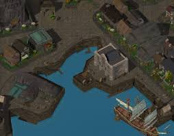

|

|
The most important buildings in this section of the city are the headquarters of the Iron Throne in the northwest, the Water Queen's House in the southwest, the Harbor Master's Building
in the center, the Low Lantern – a floating tavern – in the southeast and Jopalin's Tavern as the northernmost house in the row opposite the harbor offices.
The northern warehouse stores an exotic and very much alive creature, involved in two quests. The creature was brought in by a group of adventurers with a questionable name
we have met before.
|